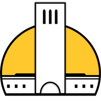

The Daily Nexus
I am a dedicated writer for the Daily Nexus, UCSB’s student-run, award-winning newspaper. In my role, I actively contribute to the "Simply Stated" column, where I analyze complex research papers and present them in a digestible and engaging format. I also report on environmental phenomena, current science events, emerging technologies, and advancements in UCSB research. I conduct interviews and engage in insightful discussions with professors, students, researchers, and experts, bringing the latest developments in science and technology to our readers.
The Daily Nexus